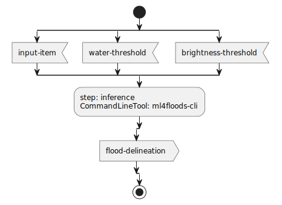
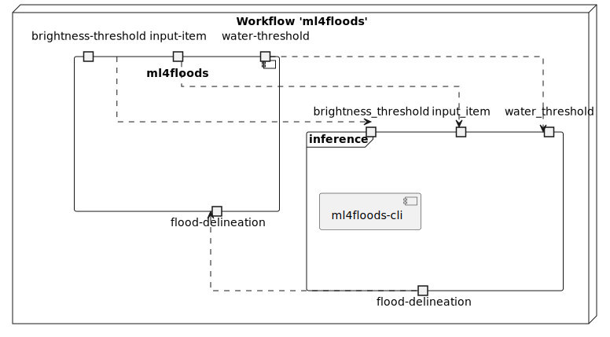
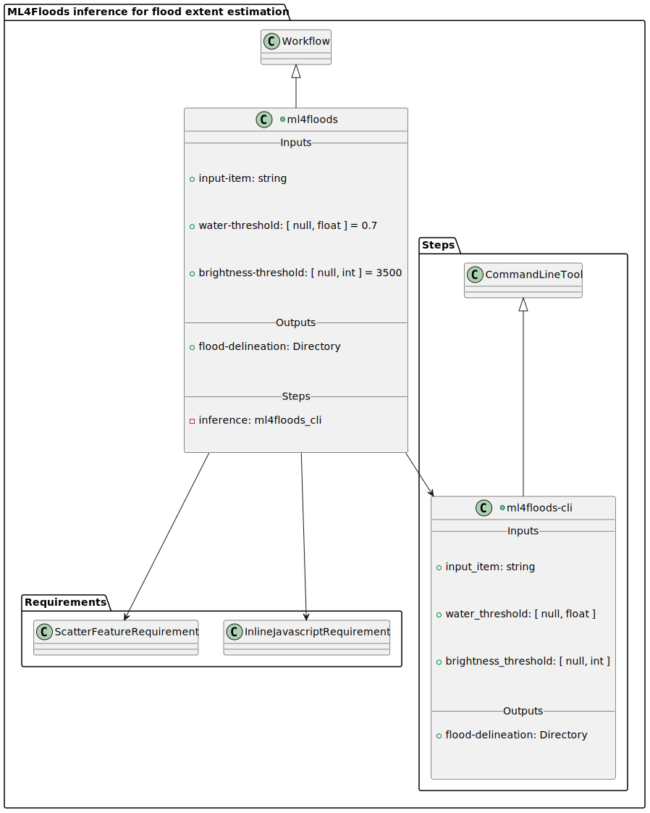
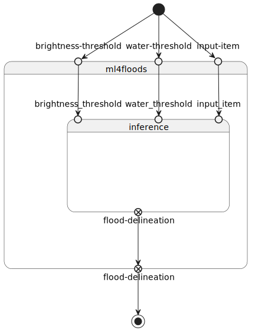

Transpile a CWL Workflow to a Markdown page
The main purpose of this command is having a human-readable visual representation of a CWL Workflow:
$ transpiler-mate markdown --help
Usage: transpiler-mate markdown [OPTIONS] SOURCE
Transpiles the input CWL to Markdown documentation.
Options:
--workflow-id TEXT ID of the main Workflow [default: main; required]
--output PATH The output directory path [default: .]
--code-repository TEXT The (SVN, GitHub, CodePlex, ...) code repository URL
--help Show this message and exit.
i.e.
$ transpiler-mate markdown \
--workflow-id ml4floods \
--output ./test/ \
--code-repository `git remote get-url origin` \
~/Documents/app-ml4floods-0.2.0.cwl
2026-01-22 16:32:29.846 | INFO | transpiler_mate.cli:markdown:304 - Rendering Markdown documentation of ~/Documents/app-ml4floods-0.2.0.cwl to test/ml4floods.md...
2026-01-22 16:32:29.846 | INFO | transpiler_mate.markdown:markdown_transpile:233 - Reading metadata from ~/Documents/app-ml4floods-0.2.0.cwl...
2026-01-22 16:32:29.846 | DEBUG | transpiler_mate.metadata:__init__:62 - Loading raw document from ~/Documents/app-ml4floods-0.2.0.cwl...
2026-01-22 16:32:29.958 | INFO | transpiler_mate.metadata:__init__:78 - Resolving License details from SPDX License List...
2026-01-22 16:32:29.958 | INFO | transpiler_mate.metadata:resolve_license:82 - Detected CC-BY-4.0 indexed in SPDX Licenses
2026-01-22 16:32:29.958 | SUCCESS | transpiler_mate.markdown:markdown_transpile:236 - Metadata successfully read!
2026-01-22 16:32:29.958 | INFO | transpiler_mate.markdown:markdown_transpile:237 - Transpiling metadata...
2026-01-22 16:32:29.960 | SUCCESS | transpiler_mate.markdown:markdown_transpile:242 - Metadata successfully transpiled!
2026-01-22 16:32:29.960 | INFO | transpiler_mate.markdown:markdown_transpile:243 - Reading Workflow model...
2026-01-22 16:32:29.960 | DEBUG | cwl_loader:load_cwl_from_yaml:143 - No needs to update the Raw CWL document since it targets already the v1.2
2026-01-22 16:32:29.960 | DEBUG | cwl_loader:load_cwl_from_yaml:145 - Parsing the raw CWL document to the CWL Utils DOM...
2026-01-22 16:32:29.963 | DEBUG | cwl_loader:load_cwl_from_yaml:158 - Raw CWL document successfully parsed to the CWL Utils DOM!
2026-01-22 16:32:29.963 | DEBUG | cwl_loader:load_cwl_from_yaml:160 - Dereferencing the steps[].run...
2026-01-22 16:32:29.963 | DEBUG | cwl_loader:_on_process:78 - Checking if #ml4floods-cli must be externally imported...
2026-01-22 16:32:29.963 | DEBUG | cwl_loader:_on_process:82 - run_url: - uri: io://
2026-01-22 16:32:29.963 | DEBUG | cwl_loader:load_cwl_from_yaml:167 - steps[].run successfully dereferenced! Dereferencing the FQNs...
2026-01-22 16:32:29.963 | DEBUG | cwl_loader:load_cwl_from_yaml:171 - CWL document successfully dereferenced! Now verifying steps[].run integrity...
2026-01-22 16:32:29.963 | DEBUG | cwl_loader:load_cwl_from_yaml:175 - All steps[].run link are resolvable!
2026-01-22 16:32:29.963 | DEBUG | cwl_loader:load_cwl_from_yaml:178 - Sorting Process instances by dependencies....
2026-01-22 16:32:29.963 | DEBUG | cwl_loader:load_cwl_from_yaml:180 - Sorting process is over.
2026-01-22 16:32:29.963 | SUCCESS | transpiler_mate.markdown:markdown_transpile:251 - Workflow model successfully read!
2026-01-22 16:32:29.983 | INFO | transpiler_mate.cli:markdown:314 - Markdown documentation successfully serialized to test/ml4floods.md!
It is strongly recommended to use this command combined with the cwl2puml CLI tool, to render the Workflow, i.e.
cwl2puml \
--workflow-id ml4floods \
--output ./test/ \
--convert-image \
--image-format svg \
~/Documents/app-ml4floods-0.2.0.cwl
The page will look alike the produced documentation below
ML4Floods inference for flood extent estimation using pre-trained model on Sentinel-2 or Landsat-9 data v0.2.0
ML4Floods is an end-to-end ML pipeline for flood extent estimation using optical satellite data from Sentinel-2 or Landsat-8/9 acquisition
This software is licensed under the terms of the Creative Commons Attribution 4.0 International license - SPDX short identifier: CC-BY-4.0
2025-10-29 - 2026-01-22T16:32:29.966 Copyright Terradue Srl - > https://ror.org/0069cx113
Project Team
Authors
| Name | Organization | Role | Identifier | |
|---|---|---|---|---|
| Brito, Fabrice | fabrice.brito@terradue.com | Terradue | Project Manager | https://orcid.org/0009-0000-1342-9736 |
| Re, Alice | alice.re@terradue.com | Terradue | Researcher | https://orcid.org/0000-0001-7068-5533 |
| Tripodi, Simone | simone.tripodi@terradue.com | Terradue | Project Leader | https://orcid.org/0009-0006-2063-618X |
Contributors
| Name | Organization | Role | Identifier | |
|---|---|---|---|---|
| Vaccari, Simone | simone.vaccari@terradue.com | Terradue | Researcher | https://orcid.org/0000-0002-2757-4165 |
User Manual
User Manual can be found on https://eoap.github.io/app-ml4floods/.
Runtime environment
Supported Operating Systems
- Linux
- MacOS X
Requirements
Software Source code
- Browsable version of the source repository;
- Continuous integration system used by the project;
- Issues, bugs, and feature requests should be submitted to the following issue management system for this project
Workflow
ml4floods
CWL Class
Workflow
Inputs
| Id | Type | Label | Doc |
|---|---|---|---|
input-item |
string |
Optical satellite acquisition | Sentinel-2 or Landsat-9 acquisition to be processed |
water-threshold |
[ null, float ] |
Water threshold | Threshold for water detection (default 0.7) |
brightness-threshold |
[ null, int ] |
Brightness threshold | Threshold for brightness (default 3500) |
Steps
| Id | Runs | Label | Doc |
|---|---|---|---|
| inference | #ml4floods-cli |
None | None |
Outputs
| Id | Type | Label | Doc |
|---|---|---|---|
flood-delineation |
Directory |
None | None |
UML Diagrams
UML activity diagram

UML component diagram

UML class diagram

UML sequence diagram

UML state diagram

ml4floods-cli
CWL Class
CommandLineTool
Inputs
| Id | Option | Type |
|---|---|---|
input_item |
--input-item |
string |
water_threshold |
--water-threshold |
[ null, float ] |
brightness_threshold |
--brightness-threshold |
[ null, int ] |
Execution usage example:
ml4floods-cli \
--input-item <INPUT_ITEM> \
(--water-threshold <WATER_THRESHOLD>) \
(--brightness-threshold <BRIGHTNESS_THRESHOLD>)
Run in step
inference